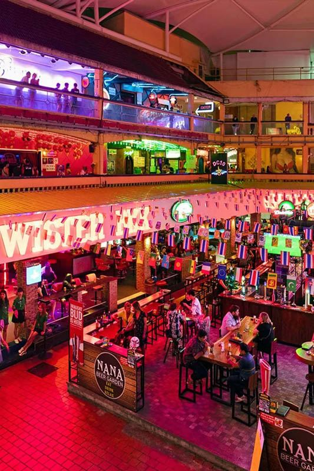
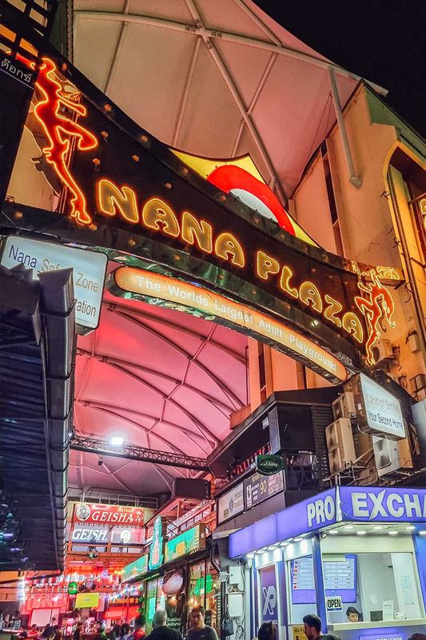

Nana Plaza is Bangkok's most famous entertainment complex, a 4-story destination that has been a cornerstone of the city's nightlife scene since the 1970s. Located just 200 meters from Royal Ivory Hotel on Sukhumvit Soi 4, it's one of Bangkok's most accessible entertainment venues for international visitors seeking vibrant nightlife experiences.
What makes Nana Plaza exceptional is its convenient location and international atmosphere. The complex caters specifically to tourists with English-speaking staff, familiar entertainment formats, and a welcoming environment for visitors from around the world. Its proximity to BTS Nana station and major hotels makes it easily accessible while maintaining a secure, well-managed environment.
For Royal Ivory Hotel guests, Nana Plaza offers unparalleled convenience - it's literally a 3-minute walk from the hotel. This proximity means guests can easily experience Bangkok's famous nightlife scene while having a comfortable, safe place to return to at the end of the evening.
Nana Plaza is exceptionally convenient for Royal Ivory Hotel guests, being one of Bangkok's most accessible entertainment destinations. The short walking distance makes it perfect for guests who want to experience Bangkok nightlife without dealing with transportation.
Total Distance: 200 meters | Walking Time: 3 minutes | Cost: FREE
🚶 Royal Ivory Advantage: You're staying in the perfect location! Nana Plaza is closer to our hotel than any other accommodation in Bangkok. Walk there in 3 minutes, enjoy the evening, and return safely to your comfortable room whenever you're ready.
Nana Plaza is a well-organized 4-story entertainment complex featuring numerous venues, each with its own character and entertainment style. Understanding the layout helps visitors navigate efficiently and find venues that match their preferences.
| Floor | Venue Types | Atmosphere | Best For |
|---|---|---|---|
| 🏢 Ground Floor | Main bars, restaurants, entrance venues | Welcome area, easy access | First-time visitors, dining |
| 🏢 Second Floor | Sports bars, casual entertainment | Relaxed, social atmosphere | Watching sports, socializing |
| 🏢 Third Floor | Themed bars, specialty venues | Diverse entertainment options | Variety seekers, themed experiences |
| 🏢 Fourth Floor | Premium venues, rooftop areas | Upscale entertainment | Premium experience, city views |

Nana Plaza offers a diverse entertainment experience with venues catering to different tastes and preferences. The complex is known for its professional management, security presence, and international atmosphere that welcomes visitors from around the world.
The complex operates with professional standards and security measures ensuring visitor safety and comfort. English is widely spoken, venues maintain clean facilities, and the atmosphere is welcoming to international tourists. Many visitors appreciate the organized, accessible nature of the complex compared to other nightlife areas in Bangkok.
Quality standards: Clean facilities, professional management, security presence
International focus: English-speaking staff, familiar service styles
Variety: Multiple venue types offering different entertainment experiences
Accessibility: Easy navigation, clear signage, tourist-friendly atmosphere
Understanding practical aspects of visiting Nana Plaza helps ensure a positive experience. The complex operates with clear guidelines and professional standards that benefit all visitors.
💰 Budget Planning Tips:
Drinks: 200-500 Baht for cocktails and beer
Food: 300-800 Baht for meals and bar snacks
Cover charges: Vary by venue, typically 500-1,500 Baht
Tips: 10-20% appreciated for good service
Evening budget: 2,000-5,000 Baht for full night experience
💡 Complete Pricing Information:
Get detailed 2026 pricing, money-saving tips, and budget comparisons in our comprehensive Nana Plaza Price List & Budget Guide - including Royal Ivory Hotel cost advantages and exact venue pricing.
Nana Plaza maintains professional security standards and provides a safe environment for international visitors. Following standard nightlife precautions ensures the best possible experience.
🛡️ Safety Guidelines:
Stay aware: Keep track of surroundings and personal belongings
Drink responsibly: Know your limits and stay hydrated
Cash management: Bring sufficient cash but don't carry excess amounts
Royal Ivory advantage: Return to hotel easily - just a 3-minute walk
Communication: Keep hotel contact information for easy return
📚 Essential Reading for First-Timers:
For comprehensive safety information and cultural guidelines, read our complete Nana Plaza Safety & Etiquette Guide - covering scam prevention, cultural etiquette, and safety protocols specifically for international visitors.
Nana Plaza is just 200 meters (3-minute walk) from Royal Ivory Hotel. Walk straight out of the hotel, turn right on Sukhumvit Road, and Nana Plaza entrance is on Sukhumvit Soi 4 on your left. It's Bangkok's most conveniently located entertainment complex for hotel guests.
Nana Plaza is open daily from 6:00 PM to 2:00 AM. Most venues within the complex follow these hours, though some restaurants may open earlier. Peak hours are typically 8:00 PM to midnight when the complex is most active.
Yes, Nana Plaza is considered safe for tourists. The complex has security personnel, good lighting, and caters specifically to international visitors. Standard nightlife precautions apply: stay aware of surroundings, don't leave drinks unattended, and keep valuables secure.
Nana Plaza is a 4-story entertainment complex featuring numerous bars, restaurants, live entertainment venues, and nightlife establishments. It's known for its international atmosphere, English-speaking staff, and variety of entertainment options catering to tourists.
Bring valid ID (passport required), sufficient cash (Thai Baht preferred), and dress smartly casual. Leave expensive jewelry at hotel, wear comfortable but appropriate clothing, and keep Royal Ivory Hotel contact information for easy return.
Staying at Royal Ivory Hotel provides unmatched convenience for experiencing Nana Plaza and Bangkok's entertainment scene. Our prime location and guest services enhance your nightlife experience.
24-hour front desk: Staff available for assistance and information
Safe storage: Secure your valuables during evening out
Local guidance: Staff familiar with entertainment area and safety tips
Comfortable rooms: Relax in air-conditioned comfort after entertainment
No joiner charge: Guest-friendly policy for social visits
Use Royal Ivory as your base to explore Nana Plaza in the evening and Bangkok's cultural attractions during the day. Our central location provides easy access to temples, markets, shopping, and cultural sites via BTS, while keeping you close to Bangkok's most famous entertainment district.